Cutoffs for multimapping
Briana Mittleman
3/26/2020
Last updated: 2020-03-31
Checks: 7 0
Knit directory: Comparative_APA/analysis/
This reproducible R Markdown analysis was created with workflowr (version 1.6.0). The Checks tab describes the reproducibility checks that were applied when the results were created. The Past versions tab lists the development history.
Great! Since the R Markdown file has been committed to the Git repository, you know the exact version of the code that produced these results.
Great job! The global environment was empty. Objects defined in the global environment can affect the analysis in your R Markdown file in unknown ways. For reproduciblity it’s best to always run the code in an empty environment.
The command set.seed(20190902) was run prior to running the code in the R Markdown file. Setting a seed ensures that any results that rely on randomness, e.g. subsampling or permutations, are reproducible.
Great job! Recording the operating system, R version, and package versions is critical for reproducibility.
Nice! There were no cached chunks for this analysis, so you can be confident that you successfully produced the results during this run.
Great job! Using relative paths to the files within your workflowr project makes it easier to run your code on other machines.
Great! You are using Git for version control. Tracking code development and connecting the code version to the results is critical for reproducibility. The version displayed above was the version of the Git repository at the time these results were generated.
Note that you need to be careful to ensure that all relevant files for the analysis have been committed to Git prior to generating the results (you can use wflow_publish or wflow_git_commit). workflowr only checks the R Markdown file, but you know if there are other scripts or data files that it depends on. Below is the status of the Git repository when the results were generated:
Ignored files:
Ignored: .DS_Store
Ignored: .Rhistory
Ignored: .Rproj.user/
Ignored: code/chimp_log/
Ignored: code/human_log/
Ignored: data/.DS_Store
Ignored: data/TrialFiltersMeta.txt.sb-9845453e-R58Y0Q/
Ignored: data/mediation_prot/
Ignored: data/metadata_HCpanel.txt.sb-a5794dd2-i594qs/
Ignored: output/.DS_Store
Untracked files:
Untracked: ._.DS_Store
Untracked: Chimp/
Untracked: Human/
Untracked: analysis/CrossChimpThreePrime.Rmd
Untracked: analysis/DiffTransProtvsExpression.Rmd
Untracked: analysis/DiffUsedUTR.Rmd
Untracked: analysis/GvizPlots.Rmd
Untracked: analysis/HandC.TvN
Untracked: analysis/PhenotypeOverlap10.Rmd
Untracked: analysis/annotationBias.Rmd
Untracked: analysis/assessReadQual.Rmd
Untracked: analysis/diffExpressionPantro6.Rmd
Untracked: analysis/pol2.Rmd
Untracked: code/._AlignmentScores.sh
Untracked: code/._BothFCMM.sh
Untracked: code/._BothFCMMPrim.sh
Untracked: code/._BothFCnewOInclusive.sh
Untracked: code/._ChimpStarMM2.sh
Untracked: code/._ClassifyLeafviz.sh
Untracked: code/._ClosestorthoEx.sh
Untracked: code/._Config_chimp.yaml
Untracked: code/._Config_chimp_full.yaml
Untracked: code/._Config_human.yaml
Untracked: code/._ConvertJunc2Bed.sh
Untracked: code/._CountNucleotides.py
Untracked: code/._CrossMapChimpRNA.sh
Untracked: code/._CrossMapThreeprime.sh
Untracked: code/._DiffSplice.sh
Untracked: code/._DiffSplicePlots.sh
Untracked: code/._DiffSplicePlots_gencode.sh
Untracked: code/._DiffSplice_gencode.sh
Untracked: code/._DiffSplice_removebad.sh
Untracked: code/._Filter255MM.sh
Untracked: code/._FilterPrimSec.sh
Untracked: code/._FindIntronForDomPAS.sh
Untracked: code/._FindIntronForDomPAS_DF.sh
Untracked: code/._GetMAPQscore.py
Untracked: code/._GetSecondaryMap.py
Untracked: code/._Lift5perPAS.sh
Untracked: code/._LiftFinalChimpJunc2Human.sh
Untracked: code/._LiftOrthoPAS2chimp.sh
Untracked: code/._MapBadSamples.sh
Untracked: code/._MismatchNumbers.sh
Untracked: code/._PAS_ATTAAA.sh
Untracked: code/._PAS_ATTAAA_df.sh
Untracked: code/._PAS_seqExpanded.sh
Untracked: code/._PASsequences.sh
Untracked: code/._PASsequences_DF.sh
Untracked: code/._PlotNuclearUsagebySpecies.R
Untracked: code/._PlotNuclearUsagebySpecies_DF.R
Untracked: code/._QuantMergedClusters.sh
Untracked: code/._RNATranscriptDTplot.sh
Untracked: code/._ReverseLiftFilter.R
Untracked: code/._RunFixLeafCluster.sh
Untracked: code/._RunNegMCMediation.sh
Untracked: code/._RunNegMCMediationDF.sh
Untracked: code/._RunPosMCMediationDF.err
Untracked: code/._RunPosMCMediationDF.sh
Untracked: code/._SAF2Bed.py
Untracked: code/._Snakefile
Untracked: code/._SnakefilePAS
Untracked: code/._SnakefilePASfilt
Untracked: code/._SortIndexBadSamples.sh
Untracked: code/._StarMM2.sh
Untracked: code/._TestFC.sh
Untracked: code/._assignPeak2Intronicregion
Untracked: code/._assignPeak2Intronicregion.sh
Untracked: code/._bed215upbed.py
Untracked: code/._bed2Bedbothstrand.py
Untracked: code/._bed2SAF_gen.py
Untracked: code/._buildIndecpantro5
Untracked: code/._buildIndecpantro5.sh
Untracked: code/._buildLeafviz.sh
Untracked: code/._buildLeafviz_leadAnno.sh
Untracked: code/._buildStarIndex.sh
Untracked: code/._chimpChromprder.sh
Untracked: code/._chimpMultiCov.sh
Untracked: code/._chimpMultiCov255.sh
Untracked: code/._chimpMultiCovInclusive.sh
Untracked: code/._chooseSignalSite.py
Untracked: code/._cleanbed2saf.py
Untracked: code/._cluster.json
Untracked: code/._cluster2bed.py
Untracked: code/._clusterLiftReverse.sh
Untracked: code/._clusterLiftReverse_removebad.sh
Untracked: code/._clusterLiftprimary.sh
Untracked: code/._clusterLiftprimary_removebad.sh
Untracked: code/._converBam2Junc.sh
Untracked: code/._converBam2Junc_removeBad.sh
Untracked: code/._extraSnakefiltpas
Untracked: code/._extractPhyloReg.py
Untracked: code/._extractPhyloRegGene.py
Untracked: code/._extractPhylopGeneral.ph
Untracked: code/._extractPhylopGeneral.py
Untracked: code/._extractPhylopReg200down.py
Untracked: code/._extractPhylopReg200up.py
Untracked: code/._filter5percPAS.py
Untracked: code/._filterNumChroms.py
Untracked: code/._filterPASforMP.py
Untracked: code/._filterPostLift.py
Untracked: code/._filterPrimaryread.py
Untracked: code/._filterSecondaryread.py
Untracked: code/._fixExonFC.py
Untracked: code/._fixFCheadforExp.py
Untracked: code/._fixLeafCluster.py
Untracked: code/._fixLiftedJunc.py
Untracked: code/._fixUTRexonanno.py
Untracked: code/._formathg38Anno.py
Untracked: code/._formatpantro6Anno.py
Untracked: code/._getRNAseqMapStats.sh
Untracked: code/._hg19MapStats.sh
Untracked: code/._humanChromorder.sh
Untracked: code/._humanMultiCov.sh
Untracked: code/._humanMultiCov255.sh
Untracked: code/._humanMultiCov_inclusive.sh
Untracked: code/._intersectLiftedPAS.sh
Untracked: code/._liftJunctionFiles.sh
Untracked: code/._liftPAS19to38.sh
Untracked: code/._liftedchimpJunc2human.sh
Untracked: code/._makeNuclearDapaplots.sh
Untracked: code/._makeNuclearDapaplots_DF.sh
Untracked: code/._makeSamplyGroupsHuman_TvN.py
Untracked: code/._mapRNAseqhg19.sh
Untracked: code/._mapRNAseqhg19_newPipeline.sh
Untracked: code/._maphg19.sh
Untracked: code/._maphg19_subjunc.sh
Untracked: code/._mediation_test.R
Untracked: code/._mergeChimp3prime_inhg38.sh
Untracked: code/._mergeandBWRNAseq.sh
Untracked: code/._mergedBam2BW.sh
Untracked: code/._nameClusters.py
Untracked: code/._negativeMediation_montecarlo.R
Untracked: code/._negativeMediation_montecarloDF.R
Untracked: code/._numMultimap.py
Untracked: code/._overlapMMandOrthoexon.sh
Untracked: code/._overlapPASandOrthoexon.sh
Untracked: code/._overlapapaQTLPAS.sh
Untracked: code/._parseHg38.py
Untracked: code/._postiveMediation_montecarlo_DF.R
Untracked: code/._prepareCleanLiftedFC_5perc4LC.py
Untracked: code/._prepareLeafvizAnno.sh
Untracked: code/._preparePAS4lift.py
Untracked: code/._primaryLift.sh
Untracked: code/._processhg38exons.py
Untracked: code/._quantJunc.sh
Untracked: code/._quantJunc_TEST.sh
Untracked: code/._quantJunc_removeBad.sh
Untracked: code/._quantLiftedPASPrimary.sh
Untracked: code/._quantMerged_seperatly.sh
Untracked: code/._recLiftchim2human.sh
Untracked: code/._revLiftPAShg38to19.sh
Untracked: code/._reverseLift.sh
Untracked: code/._runCheckReverseLift.sh
Untracked: code/._runChimpDiffIso.sh
Untracked: code/._runCountNucleotides.sh
Untracked: code/._runFilterNumChroms.sh
Untracked: code/._runHumanDiffIso.sh
Untracked: code/._runNuclearDiffIso_DF.sh
Untracked: code/._runNuclearDifffIso.sh
Untracked: code/._runTotalDiffIso.sh
Untracked: code/._run_chimpverifybam.sh
Untracked: code/._run_verifyBam.sh
Untracked: code/._snakemake.batch
Untracked: code/._snakemakePAS.batch
Untracked: code/._snakemakePASchimp.batch
Untracked: code/._snakemakePAShuman.batch
Untracked: code/._snakemake_chimp.batch
Untracked: code/._snakemake_human.batch
Untracked: code/._snakemakefiltPAS.batch
Untracked: code/._snakemakefiltPAS_chimp
Untracked: code/._snakemakefiltPAS_chimp.sh
Untracked: code/._snakemakefiltPAS_human.sh
Untracked: code/._spliceSite2Fasta.py
Untracked: code/._submit-snakemake-chimp.sh
Untracked: code/._submit-snakemake-human.sh
Untracked: code/._submit-snakemakePAS-chimp.sh
Untracked: code/._submit-snakemakePAS-human.sh
Untracked: code/._submit-snakemakefiltPAS-chimp.sh
Untracked: code/._submit-snakemakefiltPAS-human.sh
Untracked: code/._subset_diffisopheno_Nuclear_HvC.py
Untracked: code/._subset_diffisopheno_Nuclear_HvC_DF.py
Untracked: code/._subset_diffisopheno_Total_HvC.py
Untracked: code/._threeprimeOrthoFC.sh
Untracked: code/._transcriptDTplotsNuclear.sh
Untracked: code/._verifyBam4973.sh
Untracked: code/._verifyBam4973inHuman.sh
Untracked: code/._wrap_chimpverifybam.sh
Untracked: code/._wrap_verifyBam.sh
Untracked: code/._writeMergecode.py
Untracked: code/.snakemake/
Untracked: code/AlignmentScores.err
Untracked: code/AlignmentScores.out
Untracked: code/AlignmentScores.sh
Untracked: code/BothFCMM.err
Untracked: code/BothFCMM.out
Untracked: code/BothFCMM.sh
Untracked: code/BothFCMMPrim.err
Untracked: code/BothFCMMPrim.out
Untracked: code/BothFCMMPrim.sh
Untracked: code/BothFCnewOInclusive.sh
Untracked: code/BothFCnewOInclusive.sh.err
Untracked: code/BothFCnewOInclusive.sh.out
Untracked: code/ChimpStarMM2.err
Untracked: code/ChimpStarMM2.out
Untracked: code/ChimpStarMM2.sh
Untracked: code/ClassifyLeafviz.sh
Untracked: code/ClosestorthoEx.err
Untracked: code/ClosestorthoEx.out
Untracked: code/ClosestorthoEx.sh
Untracked: code/Config_chimp.yaml
Untracked: code/Config_chimp_full.yaml
Untracked: code/Config_human.yaml
Untracked: code/ConvertJunc2Bed.err
Untracked: code/ConvertJunc2Bed.out
Untracked: code/ConvertJunc2Bed.sh
Untracked: code/CountNucleotides.py
Untracked: code/CrossMapChimpRNA.sh
Untracked: code/CrossMapThreeprime.sh
Untracked: code/CrossmapChimp3prime.err
Untracked: code/CrossmapChimp3prime.out
Untracked: code/CrossmapChimpRNA.err
Untracked: code/CrossmapChimpRNA.out
Untracked: code/DiffSplice.err
Untracked: code/DiffSplice.out
Untracked: code/DiffSplice.sh
Untracked: code/DiffSplicePlots.err
Untracked: code/DiffSplicePlots.out
Untracked: code/DiffSplicePlots.sh
Untracked: code/DiffSplicePlots_gencode.sh
Untracked: code/DiffSplice_gencode.sh
Untracked: code/DiffSplice_removebad.err
Untracked: code/DiffSplice_removebad.out
Untracked: code/DiffSplice_removebad.sh
Untracked: code/Filter255.err
Untracked: code/Filter255.out
Untracked: code/Filter255MM.sh
Untracked: code/FilterPrimSec.err
Untracked: code/FilterPrimSec.out
Untracked: code/FilterPrimSec.sh
Untracked: code/FilterReverseLift.err
Untracked: code/FilterReverseLift.out
Untracked: code/FindIntronForDomPAS.err
Untracked: code/FindIntronForDomPAS.out
Untracked: code/FindIntronForDomPAS.sh
Untracked: code/FindIntronForDomPAS_DF.sh
Untracked: code/GencodeDiffSplice.err
Untracked: code/GencodeDiffSplice.out
Untracked: code/GetMAPQscore.py
Untracked: code/GetSecondaryMap.py
Untracked: code/HchromOrder.err
Untracked: code/HchromOrder.out
Untracked: code/IntersectMMandOrtho.err
Untracked: code/IntersectMMandOrtho.out
Untracked: code/IntersectPASandOrtho.err
Untracked: code/IntersectPASandOrtho.out
Untracked: code/JunctionLift.err
Untracked: code/JunctionLift.out
Untracked: code/JunctionLiftFinalChimp.err
Untracked: code/JunctionLiftFinalChimp.out
Untracked: code/Lift5perPAS.sh
Untracked: code/Lift5perPASbed.err
Untracked: code/Lift5perPASbed.out
Untracked: code/LiftClustersFirst.err
Untracked: code/LiftClustersFirst.out
Untracked: code/LiftClustersFirst_remove.err
Untracked: code/LiftClustersFirst_remove.out
Untracked: code/LiftClustersSecond.err
Untracked: code/LiftClustersSecond.out
Untracked: code/LiftClustersSecond_remove.err
Untracked: code/LiftClustersSecond_remove.out
Untracked: code/LiftFinalChimpJunc2Human.sh
Untracked: code/LiftOrthoPAS2chimp.sh
Untracked: code/LiftorthoPAS.err
Untracked: code/LiftorthoPASt.out
Untracked: code/Log.out
Untracked: code/MapBadSamples.err
Untracked: code/MapBadSamples.out
Untracked: code/MapBadSamples.sh
Untracked: code/MapStats.err
Untracked: code/MapStats.out
Untracked: code/MaxEntCode/
Untracked: code/MergeClusters.err
Untracked: code/MergeClusters.out
Untracked: code/MergeClusters.sh
Untracked: code/MismatchNumbers.err
Untracked: code/MismatchNumbers.out
Untracked: code/MismatchNumbers.sh
Untracked: code/PAS_ATTAAA.err
Untracked: code/PAS_ATTAAA.out
Untracked: code/PAS_ATTAAA.sh
Untracked: code/PAS_ATTAAADF.err
Untracked: code/PAS_ATTAAADF.out
Untracked: code/PAS_ATTAAA_df.sh
Untracked: code/PAS_seqExpanded.sh
Untracked: code/PAS_sequence.err
Untracked: code/PAS_sequence.out
Untracked: code/PAS_sequenceDF.err
Untracked: code/PAS_sequenceDF.out
Untracked: code/PASexpanded_sequenceDF.err
Untracked: code/PASexpanded_sequenceDF.out
Untracked: code/PASsequences.sh
Untracked: code/PASsequences_DF.sh
Untracked: code/PlotNuclearUsagebySpecies.R
Untracked: code/PlotNuclearUsagebySpecies_DF.R
Untracked: code/QuantMergeClusters
Untracked: code/QuantMergeClusters.err
Untracked: code/QuantMergeClusters.out
Untracked: code/QuantMergedClusters.sh
Untracked: code/RNATranscriptDTplot.err
Untracked: code/RNATranscriptDTplot.out
Untracked: code/RNATranscriptDTplot.sh
Untracked: code/Rev_liftoverPAShg19to38.err
Untracked: code/Rev_liftoverPAShg19to38.out
Untracked: code/ReverseLiftFilter.R
Untracked: code/RunFixCluster.err
Untracked: code/RunFixCluster.out
Untracked: code/RunFixLeafCluster.sh
Untracked: code/RunNegMCMediation.err
Untracked: code/RunNegMCMediation.sh
Untracked: code/RunNegMCMediationDF.err
Untracked: code/RunNegMCMediationDF.out
Untracked: code/RunNegMCMediationDF.sh
Untracked: code/RunNegMCMediationr.out
Untracked: code/RunPosMCMediation.err
Untracked: code/RunPosMCMediation.sh
Untracked: code/RunPosMCMediationDF.err
Untracked: code/RunPosMCMediationDF.out
Untracked: code/RunPosMCMediationDF.sh
Untracked: code/RunPosMCMediationr.out
Untracked: code/SAF215upbed_gen.py
Untracked: code/SAF2Bed.py
Untracked: code/Snakefile
Untracked: code/SnakefilePAS
Untracked: code/SnakefilePASfilt
Untracked: code/SortIndexBadSamples.err
Untracked: code/SortIndexBadSamples.out
Untracked: code/SortIndexBadSamples.sh
Untracked: code/StarMM2.err
Untracked: code/StarMM2.out
Untracked: code/StarMM2.sh
Untracked: code/TestFC.err
Untracked: code/TestFC.out
Untracked: code/TestFC.sh
Untracked: code/TotalTranscriptDTplot.err
Untracked: code/TotalTranscriptDTplot.out
Untracked: code/Upstream10Bases_general.py
Untracked: code/apaQTLsnake.err
Untracked: code/apaQTLsnake.out
Untracked: code/apaQTLsnakePAS.err
Untracked: code/apaQTLsnakePAS.out
Untracked: code/apaQTLsnakePAShuman.err
Untracked: code/assignPeak2Intronicregion.err
Untracked: code/assignPeak2Intronicregion.out
Untracked: code/assignPeak2Intronicregion.sh
Untracked: code/bam2junc.err
Untracked: code/bam2junc.out
Untracked: code/bam2junc_remove.err
Untracked: code/bam2junc_remove.out
Untracked: code/bed215upbed.py
Untracked: code/bed2Bedbothstrand.py
Untracked: code/bed2SAF_gen.py
Untracked: code/bed2saf.py
Untracked: code/bg_to_cov.py
Untracked: code/buildIndecpantro5
Untracked: code/buildIndecpantro5.sh
Untracked: code/buildLeafviz.err
Untracked: code/buildLeafviz.out
Untracked: code/buildLeafviz.sh
Untracked: code/buildLeafviz_leadAnno.sh
Untracked: code/buildLeafviz_leafanno.err
Untracked: code/buildLeafviz_leafanno.out
Untracked: code/buildStarIndex.sh
Untracked: code/callPeaksYL.py
Untracked: code/chimpChromprder.sh
Untracked: code/chimpMultiCov.err
Untracked: code/chimpMultiCov.out
Untracked: code/chimpMultiCov.sh
Untracked: code/chimpMultiCov255.sh
Untracked: code/chimpMultiCovInclusive.err
Untracked: code/chimpMultiCovInclusive.out
Untracked: code/chimpMultiCovInclusive.sh
Untracked: code/chooseAnno2Bed.py
Untracked: code/chooseAnno2SAF.py
Untracked: code/chooseSignalSite.py
Untracked: code/chromOrder.err
Untracked: code/chromOrder.out
Untracked: code/classifyLeafviz.err
Untracked: code/classifyLeafviz.out
Untracked: code/cleanbed2saf.py
Untracked: code/cluster.json
Untracked: code/cluster2bed.py
Untracked: code/clusterLiftReverse.sh
Untracked: code/clusterLiftReverse_removebad.sh
Untracked: code/clusterLiftprimary.sh
Untracked: code/clusterLiftprimary_removebad.sh
Untracked: code/clusterPAS.json
Untracked: code/clusterfiltPAS.json
Untracked: code/comands2Mege.sh
Untracked: code/converBam2Junc.sh
Untracked: code/converBam2Junc_removeBad.sh
Untracked: code/convertNumeric.py
Untracked: code/environment.yaml
Untracked: code/extraSnakefiltpas
Untracked: code/extractPhyloReg.py
Untracked: code/extractPhyloRegGene.py
Untracked: code/extractPhylopGeneral.py
Untracked: code/extractPhylopReg200down.py
Untracked: code/extractPhylopReg200up.py
Untracked: code/filter5perc.R
Untracked: code/filter5percPAS.py
Untracked: code/filter5percPheno.py
Untracked: code/filterBamforMP.pysam2_gen.py
Untracked: code/filterJuncChroms.err
Untracked: code/filterJuncChroms.out
Untracked: code/filterMissprimingInNuc10_gen.py
Untracked: code/filterNumChroms.py
Untracked: code/filterPASforMP.py
Untracked: code/filterPostLift.py
Untracked: code/filterPrimaryread.py
Untracked: code/filterSAFforMP_gen.py
Untracked: code/filterSecondaryread.py
Untracked: code/filterSortBedbyCleanedBed_gen.R
Untracked: code/filterpeaks.py
Untracked: code/fixExonFC.py
Untracked: code/fixFChead.py
Untracked: code/fixFChead_bothfrac.py
Untracked: code/fixFCheadforExp.py
Untracked: code/fixLeafCluster.py
Untracked: code/fixLiftedJunc.py
Untracked: code/fixUTRexonanno.py
Untracked: code/formathg38Anno.py
Untracked: code/generateStarIndex.err
Untracked: code/generateStarIndex.out
Untracked: code/generateStarIndexHuman.err
Untracked: code/generateStarIndexHuman.out
Untracked: code/getRNAseqMapStats.sh
Untracked: code/hg19MapStats.err
Untracked: code/hg19MapStats.out
Untracked: code/hg19MapStats.sh
Untracked: code/humanChromorder.sh
Untracked: code/humanFiles
Untracked: code/humanMultiCov.err
Untracked: code/humanMultiCov.out
Untracked: code/humanMultiCov.sh
Untracked: code/humanMultiCov255.err
Untracked: code/humanMultiCov255.out
Untracked: code/humanMultiCov255.sh
Untracked: code/humanMultiCovInclusive.err
Untracked: code/humanMultiCovInclusive.out
Untracked: code/humanMultiCov_inclusive.sh
Untracked: code/intersectAnno.err
Untracked: code/intersectAnno.out
Untracked: code/intersectAnnoExt.err
Untracked: code/intersectAnnoExt.out
Untracked: code/intersectLiftedPAS.sh
Untracked: code/leafcutter_merge_regtools_redo.py
Untracked: code/liftJunctionFiles.sh
Untracked: code/liftPAS19to38.sh
Untracked: code/liftoverPAShg19to38.err
Untracked: code/liftoverPAShg19to38.out
Untracked: code/log/
Untracked: code/make5percPeakbed.py
Untracked: code/makeFileID.py
Untracked: code/makeNuclearDapaplots.sh
Untracked: code/makeNuclearDapaplots_DF.sh
Untracked: code/makeNuclearPlots.err
Untracked: code/makeNuclearPlots.out
Untracked: code/makeNuclearPlotsDF.err
Untracked: code/makeNuclearPlotsDF.out
Untracked: code/makePheno.py
Untracked: code/makeSamplyGroupsChimp_TvN.py
Untracked: code/makeSamplyGroupsHuman_TvN.py
Untracked: code/mapRNAseqhg19.sh
Untracked: code/mapRNAseqhg19_newPipeline.sh
Untracked: code/maphg19.err
Untracked: code/maphg19.out
Untracked: code/maphg19.sh
Untracked: code/maphg19_new.err
Untracked: code/maphg19_new.out
Untracked: code/maphg19_sub.err
Untracked: code/maphg19_sub.out
Untracked: code/maphg19_subjunc.sh
Untracked: code/mediation_test.R
Untracked: code/merge.err
Untracked: code/mergeChimp3prime_inhg38.sh
Untracked: code/merge_leafcutter_clusters_redo.py
Untracked: code/mergeandBWRNAseq.sh
Untracked: code/mergeandsort_ChimpinHuman.err
Untracked: code/mergeandsort_ChimpinHuman.out
Untracked: code/mergedBam2BW.sh
Untracked: code/mergedbam2bw.err
Untracked: code/mergedbam2bw.out
Untracked: code/mergedbamRNAand2bw.err
Untracked: code/mergedbamRNAand2bw.out
Untracked: code/nameClusters.py
Untracked: code/namePeaks.py
Untracked: code/negativeMediation_montecarlo.R
Untracked: code/negativeMediation_montecarloDF.R
Untracked: code/nuclearTranscriptDTplot.err
Untracked: code/nuclearTranscriptDTplot.out
Untracked: code/numMultimap.py
Untracked: code/overlapMMandOrthoexon.sh
Untracked: code/overlapPAS.err
Untracked: code/overlapPAS.out
Untracked: code/overlapPASandOrthoexon.sh
Untracked: code/overlapapaQTLPAS.sh
Untracked: code/overlapapaQTLPAS_extended.sh
Untracked: code/overlapapaQTLPAS_samples.sh
Untracked: code/parseHg38.py
Untracked: code/peak2PAS.py
Untracked: code/pheno2countonly.R
Untracked: code/postiveMediation_montecarlo.R
Untracked: code/postiveMediation_montecarlo_DF.R
Untracked: code/prepareAnnoLeafviz.err
Untracked: code/prepareAnnoLeafviz.out
Untracked: code/prepareCleanLiftedFC_5perc4LC.py
Untracked: code/prepareLeafvizAnno.sh
Untracked: code/preparePAS4lift.py
Untracked: code/prepare_phenotype_table.py
Untracked: code/primaryLift.err
Untracked: code/primaryLift.out
Untracked: code/primaryLift.sh
Untracked: code/processhg38exons.py
Untracked: code/quantJunc.sh
Untracked: code/quantJunc_TEST.sh
Untracked: code/quantJunc_removeBad.sh
Untracked: code/quantLiftedPAS.err
Untracked: code/quantLiftedPAS.out
Untracked: code/quantLiftedPAS.sh
Untracked: code/quantLiftedPASPrimary.err
Untracked: code/quantLiftedPASPrimary.out
Untracked: code/quantLiftedPASPrimary.sh
Untracked: code/quatJunc.err
Untracked: code/quatJunc.out
Untracked: code/recChimpback2Human.err
Untracked: code/recChimpback2Human.out
Untracked: code/recLiftchim2human.sh
Untracked: code/revLift.err
Untracked: code/revLift.out
Untracked: code/revLiftPAShg38to19.sh
Untracked: code/reverseLift.sh
Untracked: code/runCheckReverseLift.sh
Untracked: code/runChimpDiffIso.sh
Untracked: code/runChimpDiffIsoDF.sh
Untracked: code/runCountNucleotides.err
Untracked: code/runCountNucleotides.out
Untracked: code/runCountNucleotides.sh
Untracked: code/runCountNucleotidesPantro6.err
Untracked: code/runCountNucleotidesPantro6.out
Untracked: code/runCountNucleotides_pantro6.sh
Untracked: code/runFilterNumChroms.sh
Untracked: code/runHumanDiffIso.sh
Untracked: code/runHumanDiffIsoDF.sh
Untracked: code/runNuclearDiffIso_DF.sh
Untracked: code/runNuclearDifffIso.sh
Untracked: code/runTotalDiffIso.sh
Untracked: code/run_Chimpleafcutter_ds.err
Untracked: code/run_Chimpleafcutter_ds.out
Untracked: code/run_Chimpverifybam.err
Untracked: code/run_Chimpverifybam.out
Untracked: code/run_Humanleafcutter_dF.err
Untracked: code/run_Humanleafcutter_dF.out
Untracked: code/run_Humanleafcutter_ds.err
Untracked: code/run_Humanleafcutter_ds.out
Untracked: code/run_Nuclearleafcutter_ds.err
Untracked: code/run_Nuclearleafcutter_ds.out
Untracked: code/run_Nuclearleafcutter_dsDF.err
Untracked: code/run_Nuclearleafcutter_dsDF.out
Untracked: code/run_Totalleafcutter_ds.err
Untracked: code/run_Totalleafcutter_ds.out
Untracked: code/run_chimpverifybam.sh
Untracked: code/run_verifyBam.sh
Untracked: code/run_verifybam.err
Untracked: code/run_verifybam.out
Untracked: code/slurm-62824013.out
Untracked: code/slurm-62825841.out
Untracked: code/slurm-62826116.out
Untracked: code/slurm-64108209.out
Untracked: code/slurm-64108521.out
Untracked: code/slurm-64108557.out
Untracked: code/snakePASChimp.err
Untracked: code/snakePASChimp.out
Untracked: code/snakePAShuman.out
Untracked: code/snakemake.batch
Untracked: code/snakemakeChimp.err
Untracked: code/snakemakeChimp.out
Untracked: code/snakemakeHuman.err
Untracked: code/snakemakeHuman.out
Untracked: code/snakemakePAS.batch
Untracked: code/snakemakePASFiltChimp.err
Untracked: code/snakemakePASFiltChimp.out
Untracked: code/snakemakePASFiltHuman.err
Untracked: code/snakemakePASFiltHuman.out
Untracked: code/snakemakePASchimp.batch
Untracked: code/snakemakePAShuman.batch
Untracked: code/snakemake_chimp.batch
Untracked: code/snakemake_human.batch
Untracked: code/snakemakefiltPAS.batch
Untracked: code/snakemakefiltPAS_chimp.sh
Untracked: code/snakemakefiltPAS_human.sh
Untracked: code/spliceSite2Fasta.py
Untracked: code/submit-snakemake-chimp.sh
Untracked: code/submit-snakemake-human.sh
Untracked: code/submit-snakemakePAS-chimp.sh
Untracked: code/submit-snakemakePAS-human.sh
Untracked: code/submit-snakemakefiltPAS-chimp.sh
Untracked: code/submit-snakemakefiltPAS-human.sh
Untracked: code/subset_diffisopheno.py
Untracked: code/subset_diffisopheno_Chimp_tvN.py
Untracked: code/subset_diffisopheno_Chimp_tvN_DF.py
Untracked: code/subset_diffisopheno_Huma_tvN.py
Untracked: code/subset_diffisopheno_Huma_tvN_DF.py
Untracked: code/subset_diffisopheno_Nuclear_HvC.py
Untracked: code/subset_diffisopheno_Nuclear_HvC_DF.py
Untracked: code/subset_diffisopheno_Total_HvC.py
Untracked: code/test
Untracked: code/test.txt
Untracked: code/threeprimeOrthoFC.out
Untracked: code/threeprimeOrthoFC.sh
Untracked: code/threeprimeOrthoFCcd.err
Untracked: code/transcriptDTplotsNuclear.sh
Untracked: code/transcriptDTplotsTotal.sh
Untracked: code/verifyBam4973.sh
Untracked: code/verifyBam4973inHuman.sh
Untracked: code/verifybam4973.err
Untracked: code/verifybam4973.out
Untracked: code/verifybam4973HumanMap.err
Untracked: code/verifybam4973HumanMap.out
Untracked: code/wrap_Chimpverifybam.err
Untracked: code/wrap_Chimpverifybam.out
Untracked: code/wrap_chimpverifybam.sh
Untracked: code/wrap_verifyBam.sh
Untracked: code/wrap_verifybam.err
Untracked: code/wrap_verifybam.out
Untracked: code/writeMergecode.py
Untracked: data/._.DS_Store
Untracked: data/._HC_filenames.txt
Untracked: data/._HC_filenames.txt.sb-4426323c-IKIs0S
Untracked: data/._HC_filenames.xlsx
Untracked: data/._MapPantro6_meta.txt
Untracked: data/._MapPantro6_meta.txt.sb-a5794dd2-Cskmlm
Untracked: data/._MapPantro6_meta.xlsx
Untracked: data/._OppositeSpeciesMap.txt
Untracked: data/._OppositeSpeciesMap.txt.sb-a5794dd2-mayWJf
Untracked: data/._OppositeSpeciesMap.xlsx
Untracked: data/._RNASEQ_metadata.txt
Untracked: data/._RNASEQ_metadata.txt.sb-4426323c-TE4ns3
Untracked: data/._RNASEQ_metadata.txt.sb-51f67ae1-HXp7Gq
Untracked: data/._RNASEQ_metadata_2Removed.txt
Untracked: data/._RNASEQ_metadata_2Removed.txt.sb-4426323c-a4lBwx
Untracked: data/._RNASEQ_metadata_2Removed.xlsx
Untracked: data/._RNASEQ_metadata_stranded.txt
Untracked: data/._RNASEQ_metadata_stranded.txt.sb-a5794dd2-D659m2
Untracked: data/._RNASEQ_metadata_stranded.txt.sb-a5794dd2-ImNMoY
Untracked: data/._RNASEQ_metadata_stranded.txt.sb-e4bf31f0-ZGnGgl
Untracked: data/._RNASEQ_metadata_stranded.xlsx
Untracked: data/._TrialFiltersMeta.txt
Untracked: data/._TrialFiltersMeta.txt.sb-9845453e-R58Y0Q
Untracked: data/._metadata_HCpanel.txt
Untracked: data/._metadata_HCpanel.txt.sb-a3d92a2d-b9cYoF
Untracked: data/._metadata_HCpanel.txt.sb-a5794dd2-i594qs
Untracked: data/._metadata_HCpanel.txt.sb-f4823d1e-qihGek
Untracked: data/._metadata_HCpanel.xlsx
Untracked: data/._metadata_HCpanel_frompantro5.xlsx
Untracked: data/._~$RNASEQ_metadata.xlsx
Untracked: data/._~$metadata_HCpanel.xlsx
Untracked: data/._.xlsx
Untracked: data/BaseComp/
Untracked: data/CleanLiftedPeaks_FC_primary/
Untracked: data/CompapaQTLpas/
Untracked: data/DNDS/
Untracked: data/DTmatrix/
Untracked: data/DiffExpression/
Untracked: data/DiffIso_Nuclear/
Untracked: data/DiffIso_Nuclear_DF/
Untracked: data/DiffIso_Total/
Untracked: data/DiffSplice/
Untracked: data/DiffSplice_liftedJunc/
Untracked: data/DiffSplice_removeBad/
Untracked: data/DominantPAS/
Untracked: data/DominantPAS_DF/
Untracked: data/EvalPantro5/
Untracked: data/HC_filenames.txt
Untracked: data/HC_filenames.xlsx
Untracked: data/Khan_prot/
Untracked: data/Li_eqtls/
Untracked: data/MapPantro6_meta.txt
Untracked: data/MapPantro6_meta.xlsx
Untracked: data/MapStats/
Untracked: data/NormalizedClusters/
Untracked: data/NuclearHvC/
Untracked: data/NuclearHvC_DF/
Untracked: data/OppositeSpeciesMap.txt
Untracked: data/OppositeSpeciesMap.xlsx
Untracked: data/OrthoExonBed/
Untracked: data/OverlapBenchmark/
Untracked: data/OverlappingPAS/
Untracked: data/PAS/
Untracked: data/PAS_SAF/
Untracked: data/PAS_doubleFilter/
Untracked: data/Peaks_5perc/
Untracked: data/Pheno_5perc/
Untracked: data/Pheno_5perc_DF_nuclear/
Untracked: data/Pheno_5perc_nuclear/
Untracked: data/Pheno_5perc_nuclear_old/
Untracked: data/Pheno_5perc_total/
Untracked: data/PhyloP/
Untracked: data/RNASEQ_metadata.txt
Untracked: data/RNASEQ_metadata_2Removed.txt
Untracked: data/RNASEQ_metadata_2Removed.xlsx
Untracked: data/RNASEQ_metadata_stranded.txt
Untracked: data/RNASEQ_metadata_stranded.txt.sb-e4bf31f0-ZGnGgl/
Untracked: data/RNASEQ_metadata_stranded.xlsx
Untracked: data/SignalSites/
Untracked: data/SignalSites_doublefilter/
Untracked: data/SpliceSite/
Untracked: data/TestAnnoBiasOE/
Untracked: data/TestMM2/
Untracked: data/TestMM2_AS/
Untracked: data/TestMM2_PrimaryRead/
Untracked: data/TestMM2_SeondaryRead/
Untracked: data/TestMM2_mismatch/
Untracked: data/TestMM2_quality/
Untracked: data/Test_FC_methods/
Untracked: data/Threeprime2Ortho/
Untracked: data/TotalHvC/
Untracked: data/TrialFiltersMeta.txt
Untracked: data/TwoBadSampleAnalysis/
Untracked: data/Wang_ribo/
Untracked: data/apaQTLGenes/
Untracked: data/bioGRID/
Untracked: data/chainFiles/
Untracked: data/cleanPeaks_anno/
Untracked: data/cleanPeaks_byspecies/
Untracked: data/cleanPeaks_lifted/
Untracked: data/files4viz_nuclear/
Untracked: data/files4viz_nuclear_DF/
Untracked: data/gviz/
Untracked: data/leafviz/
Untracked: data/liftover_files/
Untracked: data/mediation/
Untracked: data/mediation_DF/
Untracked: data/metadata_HCpanel.txt
Untracked: data/metadata_HCpanel.xlsx
Untracked: data/metadata_HCpanel_frompantro5.txt
Untracked: data/metadata_HCpanel_frompantro5.xlsx
Untracked: data/multimap/
Untracked: data/primaryLift/
Untracked: data/reverseLift/
Untracked: data/testQuant/
Untracked: data/~$RNASEQ_metadata.xlsx
Untracked: data/~$metadata_HCpanel.xlsx
Untracked: data/.xlsx
Untracked: output/._.DS_Store
Untracked: output/dtPlots/
Untracked: projectNotes.Rmd
Untracked: proteinModelSet.Rmd
Unstaged changes:
Modified: analysis/DiffUsedIntronic.Rmd
Modified: analysis/ExploredAPA.Rmd
Modified: analysis/ExploredAPA_DF.Rmd
Modified: analysis/MMExpreiment.Rmd
Modified: analysis/OppositeMap.Rmd
Modified: analysis/SpliceSiteStrength.Rmd
Modified: analysis/TotalVNuclearBothSpecies.Rmd
Modified: analysis/annotationInfo.Rmd
Modified: analysis/changeMisprimcut.Rmd
Modified: analysis/comp2apaQTLPAS.Rmd
Modified: analysis/correlationPhenos.Rmd
Modified: analysis/dAPAandapaQTL_DF.Rmd
Modified: analysis/establishCutoffs.Rmd
Modified: analysis/investigatePantro5.Rmd
Modified: analysis/multiMap.Rmd
Modified: analysis/speciesSpecific.Rmd
Modified: analysis/upsetter_DF.Rmd
Note that any generated files, e.g. HTML, png, CSS, etc., are not included in this status report because it is ok for generated content to have uncommitted changes.
These are the previous versions of the R Markdown and HTML files. If you’ve configured a remote Git repository (see ?wflow_git_remote), click on the hyperlinks in the table below to view them.
| File | Version | Author | Date | Message |
|---|---|---|---|---|
| Rmd | 8901b9b | brimittleman | 2020-03-31 | add allignment scores |
| html | 842759e | brimittleman | 2020-03-31 | Build site. |
| Rmd | 6de3b83 | brimittleman | 2020-03-31 | add mismatch results |
| html | a70f2fe | brimittleman | 2020-03-28 | Build site. |
| Rmd | 706fa0d | brimittleman | 2020-03-28 | add mm exp code |
| html | 3d4dd47 | brimittleman | 2020-03-27 | Build site. |
| Rmd | f92b89c | brimittleman | 2020-03-26 | add ortho exon and new mm |
library(workflowr)This is workflowr version 1.6.0
Run ?workflowr for help getting startedlibrary(tidyverse)── Attaching packages ────────────────────────────────────────────────────────────── tidyverse 1.2.1 ──✔ ggplot2 3.1.1 ✔ purrr 0.3.2
✔ tibble 2.1.1 ✔ dplyr 0.8.0.1
✔ tidyr 0.8.3 ✔ stringr 1.3.1
✔ readr 1.3.1 ✔ forcats 0.3.0 ── Conflicts ───────────────────────────────────────────────────────────────── tidyverse_conflicts() ──
✖ dplyr::filter() masks stats::filter()
✖ dplyr::lag() masks stats::lag()I want to look at the parameters for multimapping. I will look at the paremeters such as include a read when the first vs second map difference is 10%, 5% ect. I want to get to a cutoff where the PAS lost are not in the ortho exon.
I will look at the featurecounts documentation for this or I can look directly at the star info.
−−primary: If specified, only primary alignments will be counted. Primary and secondary alignments are identified using bit 0x100 in the Flag field of SAM/BAM files. All primary alignments in a dataset will be counted no matter they are from multi- mapping reads or not (ie. ‘-M’ is ignored).
For multi-mappers, all alignments except one are marked with 0x100 (secondary alignment) in the FLAG (column 2 of the SAM
I used options:
–outFilterMultimapNmax 10 –outSAMmultNmax 1
–outSAMmultNmax 1 will output exactly one SAM line for each mapped read
I only allowed for 1 read to be mapped. I want the secondary one as well. I want to mess with the secondary read.
Remap human and chimp reads with the new filter. Just to look first, don’t worry about misspriming.
mkdir ../data/TestMM2/
sbatch StarMM2.sh
sbatch ChimpStarMM2.shchimp_combined_18358_N.MM2.sort.bam is done. I can use this to look at the seondary mapped reads.
HI:i:i Query hit index, indicating the alignment record is the i-th one stored in SAM.
the HI:i:2 reads are the secondary maped reads.
NM:i:count number of mismatches
256 is the secondary allignment
I can use pysam to filter secondary reads.
samtools view chimp_combined_18358_N.MM2.sort.bam | cut -f5 | sort -n | uniq -c1860484 0 2727360 1 3182906 3 39284071 255
without multmap:
930242 0 1363680 1 1591453 3 39284071 255
I want to filter just secondary reads and get the scores- secondary alignment score is in column 2
samtools view chimp_combined_18358_N.MM2.sort.bam | cut -f2 | sort -n | uniq -cPrimary (by strand) 23943403 0 19226043 16
seconday (by strand)
1571873 256 2313502 272
“AS” SAM tag express the “Alignment score generated by aligner” -scores between 53,85
get scores for primary and secondary
Mismatches (with secondary) 34622475 nM:i:0 7600018 nM:i:1 57259 nM:i:10 2337437 nM:i:2 1045189 nM:i:3 547184 nM:i:4 327976 nM:i:5 213004 nM:i:6 138913 nM:i:7 96974 nM:i:8 68392 nM:i:9
Primary
14717503 nM:i:0 3042728 nM:i:1 21887 nM:i:10 943180 nM:i:2 406973 nM:i:3 217371 nM:i:4 132942 nM:i:5 88071 nM:i:6 54904 nM:i:7 38671 nM:i:8 26097 nM:i:9
Seperate secondary, write code for any file:
mkdir ../data/TestMM2_SeondaryRead
mkdir ../data/TestMM2_PrimaryRead
python filterSecondaryread.py ../data/TestMM2/chimp_combined_18358_N.MM2.sort.bam ../data/TestMM2_SeondaryRead/chimp_combined_18358_N.MM2_secondary.bam
python filterPrimaryread.py ../data/TestMM2/chimp_combined_18358_N.MM2.sort.bam ../data/TestMM2_PrimaryRead/chimp_combined_18358_N.MM2_primary.bam
samtools sort -o ../data/TestMM2_SeondaryRead/chimp_combined_18358_N.MM2_secondary.sort.bam -O bam ../data/TestMM2_SeondaryRead/chimp_combined_18358_N.MM2_secondary.bam
samtools sort -o ../data/TestMM2_PrimaryRead/chimp_combined_18358_N.MM2_primary.sort.bam -O bam ../data/TestMM2_PrimaryRead/chimp_combined_18358_N.MM2_primary.bam
samtools index ../data/TestMM2_SeondaryRead/chimp_combined_18358_N.MM2_secondary.sort.bam
samtools index ../data/TestMM2_PrimaryRead/chimp_combined_18358_N.MM2_primary.sort.bam
scores 53-84
2426470 nM:i:0 919015 nM:i:1 9997 nM:i:10 253038 nM:i:2 108368 nM:i:3 59802 nM:i:4 39210 nM:i:5 26476 nM:i:6 18892 nM:i:7 13544 nM:i:8 10563 nM:i:9
This means a lot of the secondary reads also have 0 mismatch. These are probably the reads I would want to filter.
Compare the porportion.
mkdir ../data/TestMM2_quality
samtools view chimp_combined_18358_N.MM2_secondary.sort.bam | cut -f15 | sort -n | uniq -c > ../TestMM2_quality/chimp18358_secondaryMismatch.txt
samtools view chimp_combined_18358_N.MM2.sort.bam | cut -f15 | sort -n | uniq -c > ../TestMM2_quality/chimp18358_PrimaryMismatch.txt
samtools view ../data/TestMM2_PrimaryRead/chimp_combined_18358_N.MM2_primary.sort.bam | cut -f15 | sort -n | uniq -c > ../data/TestMM2_quality/chimp18358_PrimaryOnlyMismatch.txtCompare this:
SecMismatch=read.table("../data/TestMM2_quality/chimp18358_secondaryMismatch.txt",col.names = c("Reads","Mismatch"),stringsAsFactors = F) %>% mutate(TotalRead=sum(Reads),PropReads=Reads/TotalRead,set="Secondary")
PrimaryOnlyMismatch= read.table("../data/TestMM2_quality/chimp18358_PrimaryOnlyMismatch.txt",col.names = c("Reads","Mismatch"),stringsAsFactors = F) %>% mutate(TotalRead=sum(Reads),PropReads=Reads/TotalRead,set="Primary")
PrimaryMismatch=read.table("../data/TestMM2_quality/chimp18358_PrimaryMismatch.txt",col.names = c("Reads","Mismatch"),stringsAsFactors = F) %>% mutate(TotalRead=sum(Reads),PropReads=Reads/TotalRead,set="All")
BothMiss= SecMismatch %>% bind_rows(PrimaryOnlyMismatch)
ggplot(BothMiss, aes(x=Mismatch, y=PropReads, by=set, fill=set))+ geom_bar(stat="identity", position="dodge")+ labs(title="Primary v Seconday Mismatch Chimp 18358")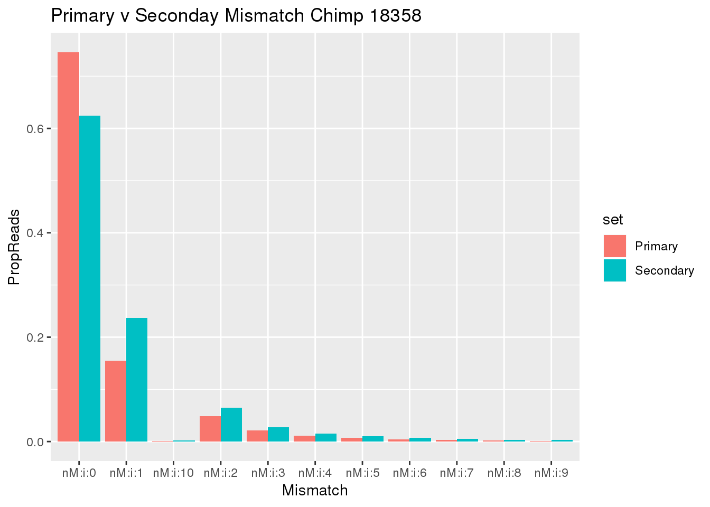
| Version | Author | Date |
|---|---|---|
| a70f2fe | brimittleman | 2020-03-28 |
Do this for scores as well
samtools view ../data/TestMM2_SeondaryRead/chimp_combined_18358_N.MM2_secondary.sort.bam | cut -f14 | sort -n | uniq -c > ../data/TestMM2_quality/chimp18358_secondaryScores.txt
samtools view ../data/TestMM2_PrimaryRead/chimp_combined_18358_N.MM2_primary.sort.bam | cut -f14 | sort -n | uniq -c > ../data/TestMM2_quality/chimp18358_PrimaryOnlyScores.txtSecScore=read.table("../data/TestMM2_quality/chimp18358_secondaryScores.txt",col.names = c("Reads","Score"),stringsAsFactors = F) %>% mutate(TotalRead=sum(Reads),PropReads=Reads/TotalRead,set="Secondary")
PrimaryOnlyScore= read.table("../data/TestMM2_quality/chimp18358_PrimaryOnlyScores.txt",col.names = c("Reads","Score"),stringsAsFactors = F) %>% mutate(TotalRead=sum(Reads),PropReads=Reads/TotalRead,set="Primary")
BothScore= SecScore %>% bind_rows(PrimaryOnlyScore)
ggplot(BothScore, aes(x=Score, y=PropReads, by=set, fill=set))+ geom_bar(stat="identity", position="dodge") + theme(axis.text.x = element_text(angle = 90, hjust = 1)) + labs(title="Primary v Seconday Scores Chimp 18358")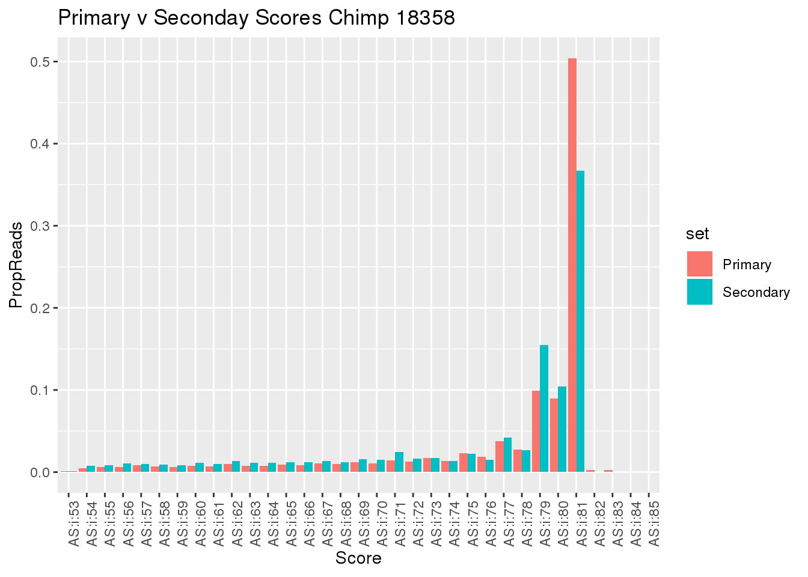
| Version | Author | Date |
|---|---|---|
| a70f2fe | brimittleman | 2020-03-28 |
Feature counts change the -Q for quality. what score is this?
may q scores?
samtools view ../data/TestMM2_SeondaryRead/chimp_combined_18358_N.MM2_secondary.sort.bam | cut -f5 | sort -n | uniq -c > ../data/TestMM2_quality/chimp18358_secondaryMAPScores.txt
samtools view ../data/TestMM2_PrimaryRead/chimp_combined_18358_N.MM2_primary.sort.bam | cut -f5 | sort -n | uniq -c > ../data/TestMM2_quality/chimp18358_PrimaryOnlyMAPScores.txtSecMAPScore=read.table("../data/TestMM2_quality/chimp18358_secondaryMAPScores.txt",col.names = c("Reads","Score"),stringsAsFactors = F) %>% mutate(TotalRead=sum(Reads),PropReads=Reads/TotalRead,set="Secondary")
PrimaryMAPOnlyScore= read.table("../data/TestMM2_quality/chimp18358_PrimaryOnlyMAPScores.txt",col.names = c("Reads","Score"),stringsAsFactors = F) %>% mutate(TotalRead=sum(Reads),PropReads=Reads/TotalRead,set="Primary")
BothMAPScore= SecMAPScore %>% bind_rows(PrimaryMAPOnlyScore)
ggplot(BothMAPScore, aes(x=Score, y=PropReads, by=set, fill=set))+ geom_bar(stat="identity", position="dodge") + theme(axis.text.x = element_text(angle = 90, hjust = 1)) + labs(title="Primary v Seconday Scores Chimp 18358")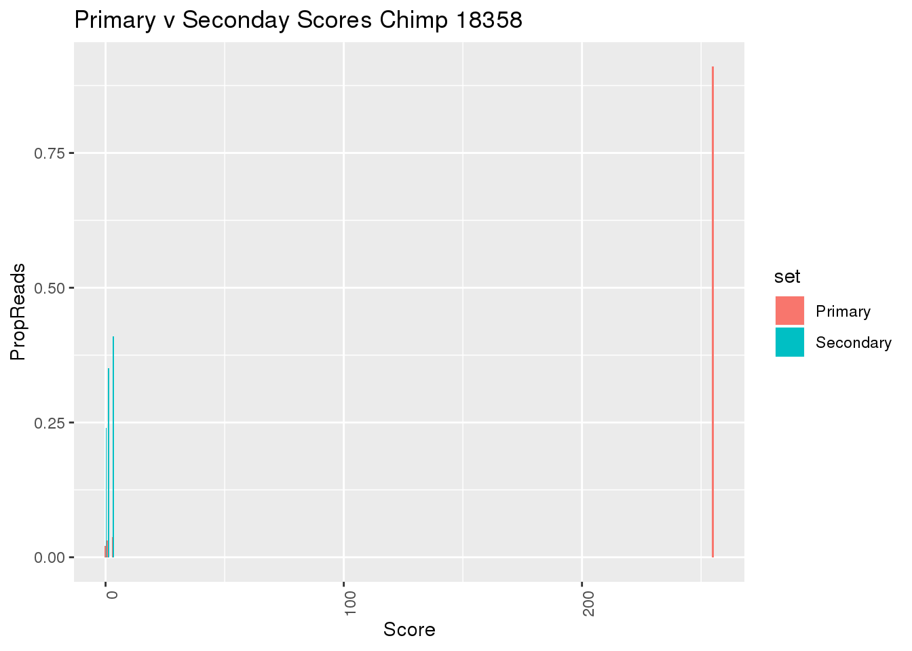
| Version | Author | Date |
|---|---|---|
| a70f2fe | brimittleman | 2020-03-28 |
Mapping reads with the Fc.
18358:
Standard: 9195763 Primary: 9440757 Multimap: 9650073 9195763 for each score.
Mismatch scores for all primary and secondary
I want to compare the primary and secondary reads for all libraries. I can then look at the mismatch distribution.
First I need to wrap the primary and secondary read code.
sbatch FilterPrimSec.sh
mkdir ../data/TestMM2_mismatch
sbatch MismatchNumbers.shLoad in results:
Chimp
Chimp_18358_primary=read.table("../data/TestMM2_mismatch/chimp_combined_18358_N_primary_mismatch.txt", stringsAsFactors = F, col.names = c("Reads", "Mis")) %>% mutate(set="Primary", species="Chimp", line="18358")
Chimp_18358_secondary=read.table("../data/TestMM2_mismatch/chimp_combined_18358_N_secondary_mismatch.txt", stringsAsFactors = F, col.names = c("Reads", "Mis")) %>% mutate(set="Secondary", species="Chimp", line="18358")
Chimp_3622_primary=read.table("../data/TestMM2_mismatch/chimp_combined_3622_N_primary_mismatch.txt", stringsAsFactors = F, col.names = c("Reads", "Mis")) %>% mutate(set="Primary", species="Chimp", line="3622")
Chimp_3622_secondary=read.table("../data/TestMM2_mismatch/chimp_combined_3622_N_secondary_mismatch.txt", stringsAsFactors = F, col.names = c("Reads", "Mis")) %>% mutate(set="Secondary", species="Chimp", line="3622")
Chimp_3659_primary=read.table("../data/TestMM2_mismatch/chimp_combined_3659_N_primary_mismatch.txt", stringsAsFactors = F, col.names = c("Reads", "Mis")) %>% mutate(set="Primary", species="Chimp", line="3659")
Chimp_3659_secondary=read.table("../data/TestMM2_mismatch/chimp_combined_3659_N_secondary_mismatch.txt", stringsAsFactors = F, col.names = c("Reads", "Mis")) %>% mutate(set="Secondary", species="Chimp", line="3659")
Chimp_4973_primary=read.table("../data/TestMM2_mismatch/chimp_combined_4973_N_primary_mismatch.txt", stringsAsFactors = F, col.names = c("Reads", "Mis")) %>% mutate(set="Primary", species="Chimp",line="4973")
Chimp_4973_secondary=read.table("../data/TestMM2_mismatch/chimp_combined_4973_N_secondary_mismatch.txt", stringsAsFactors = F, col.names = c("Reads", "Mis")) %>% mutate(set="Secondary", species="Chimp",line="4973")
Chimp_pt30_primary=read.table("../data/TestMM2_mismatch/chimp_combined_pt30_N_primary_mismatch.txt", stringsAsFactors = F, col.names = c("Reads", "Mis")) %>% mutate(set="Primary", species="Chimp", line="pt30")
Chimp_pt30_secondary=read.table("../data/TestMM2_mismatch/chimp_combined_pt30_N_secondary_mismatch.txt", stringsAsFactors = F, col.names = c("Reads", "Mis")) %>% mutate(set="Secondary", species="Chimp",line="pt30")
Chimp_pt91_primary=read.table("../data/TestMM2_mismatch/chimp_combined_pt91_N_primary_mismatch.txt", stringsAsFactors = F, col.names = c("Reads", "Mis")) %>% mutate(set="Primary", species="Chimp",line="pt91")
Chimp_pt91_secondary=read.table("../data/TestMM2_mismatch/chimp_combined_pt91_N_secondary_mismatch.txt", stringsAsFactors = F, col.names = c("Reads", "Mis")) %>% mutate(set="Secondary", species="Chimp", line="pt91")allChimpmismatch=Chimp_18358_primary %>%
bind_rows(Chimp_18358_secondary) %>%
bind_rows(Chimp_3622_primary) %>%
bind_rows(Chimp_3622_secondary) %>%
bind_rows(Chimp_3659_primary) %>%
bind_rows(Chimp_3659_secondary) %>%
bind_rows(Chimp_4973_primary) %>%
bind_rows(Chimp_4973_secondary) %>%
bind_rows(Chimp_pt30_primary) %>%
bind_rows(Chimp_pt30_secondary) %>%
bind_rows(Chimp_pt91_primary) %>%
bind_rows(Chimp_pt91_secondary) %>%
group_by(line, set) %>%
mutate(TotalReads=sum(Reads)) %>%
ungroup() %>%
mutate(PropReads=Reads/TotalReads)
allChimpmismatch$Mis=factor(allChimpmismatch$Mis, levels=c("nM:i:0", "nM:i:1" , "nM:i:2", "nM:i:3" , "nM:i:4", "nM:i:5" , "nM:i:6", "nM:i:7" , "nM:i:8" , "nM:i:9","nM:i:10"))
ggplot(allChimpmismatch, aes(x=Mis,y=PropReads,by=set, fill=set)) + geom_bar(stat="identity",position = "dodge") + facet_grid(~line)+ theme(axis.text.x = element_text(angle = 90, hjust = 1)) +labs(title="Chimp Mismatch in primary and secondary")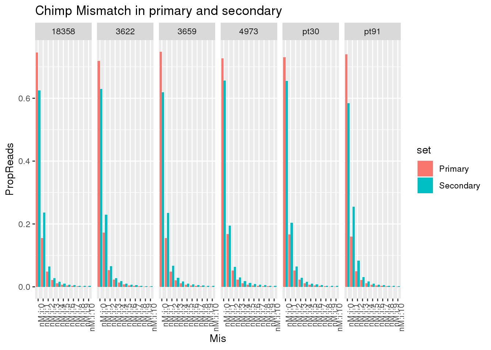
| Version | Author | Date |
|---|---|---|
| 842759e | brimittleman | 2020-03-31 |
ggplot(allChimpmismatch, aes(x=Mis,y=Reads,by=set, fill=set)) + geom_bar(stat="identity",position = "dodge") + facet_grid(~line)+ theme(axis.text.x = element_text(angle = 90, hjust = 1)) +labs(title="Chimp Mismatch in primary and secondary")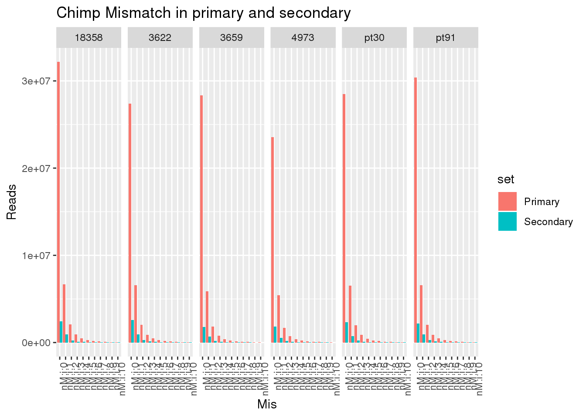
| Version | Author | Date |
|---|---|---|
| 842759e | brimittleman | 2020-03-31 |
Human:
Human_18498_primary=read.table("../data/TestMM2_mismatch/human_combined_18498_N_primary_mismatch.txt", stringsAsFactors = F, col.names = c("Reads", "Mis")) %>% mutate(set="Primary", species="Human", line="18498")
Human_18498_secondary=read.table("../data/TestMM2_mismatch/human_combined_18498_N_secondary_mismatch.txt", stringsAsFactors = F, col.names = c("Reads", "Mis")) %>% mutate(set="Secondary", species="Human", line="18498")
Human_18499_primary=read.table("../data/TestMM2_mismatch/human_combined_18499_N_primary_mismatch.txt", stringsAsFactors = F, col.names = c("Reads", "Mis")) %>% mutate(set="Primary", species="Human", line="18499")
Human_18499_secondary=read.table("../data/TestMM2_mismatch/human_combined_18499_N_secondary_mismatch.txt", stringsAsFactors = F, col.names = c("Reads", "Mis")) %>% mutate(set="Secondary", species="Human", line="18499")
Human_18502_primary=read.table("../data/TestMM2_mismatch/human_combined_18502_N_primary_mismatch.txt", stringsAsFactors = F, col.names = c("Reads", "Mis")) %>% mutate(set="Primary", species="Human", line="18502")
Human_18502_secondary=read.table("../data/TestMM2_mismatch/human_combined_18502_N_secondary_mismatch.txt", stringsAsFactors = F, col.names = c("Reads", "Mis")) %>% mutate(set="Secondary", species="Human", line="18502")
Human_18504_primary=read.table("../data/TestMM2_mismatch/human_combined_18504_N_primary_mismatch.txt", stringsAsFactors = F, col.names = c("Reads", "Mis")) %>% mutate(set="Primary", species="Human", line="18504")
Human_18504_secondary=read.table("../data/TestMM2_mismatch/human_combined_18504_N_secondary_mismatch.txt", stringsAsFactors = F, col.names = c("Reads", "Mis")) %>% mutate(set="Secondary", species="Human", line="18504")
Human_18510_primary=read.table("../data/TestMM2_mismatch/human_combined_18510_N_primary_mismatch.txt", stringsAsFactors = F, col.names = c("Reads", "Mis")) %>% mutate(set="Primary", species="Human", line="18510")
Human_18510_secondary=read.table("../data/TestMM2_mismatch/human_combined_18510_N_secondary_mismatch.txt", stringsAsFactors = F, col.names = c("Reads", "Mis")) %>% mutate(set="Secondary", species="Human", line="18510")
Human_18523_primary=read.table("../data/TestMM2_mismatch/human_combined_18523_N_primary_mismatch.txt", stringsAsFactors = F, col.names = c("Reads", "Mis")) %>% mutate(set="Primary", species="Human", line="18523")
Human_18523_secondary=read.table("../data/TestMM2_mismatch/human_combined_18523_N_secondary_mismatch.txt", stringsAsFactors = F, col.names = c("Reads", "Mis")) %>% mutate(set="Secondary", species="Human", line="18523")All human:
allHumanmismatch=Human_18498_primary %>%
bind_rows(Human_18498_secondary) %>%
bind_rows(Human_18499_primary) %>%
bind_rows(Human_18499_secondary) %>%
bind_rows(Human_18502_primary) %>%
bind_rows(Human_18502_secondary) %>%
bind_rows(Human_18504_primary) %>%
bind_rows(Human_18504_secondary) %>%
bind_rows(Human_18510_primary) %>%
bind_rows(Human_18510_secondary) %>%
bind_rows(Human_18523_primary) %>%
bind_rows(Human_18523_secondary)%>%
group_by(line, set) %>%
mutate(TotalReads=sum(Reads)) %>%
ungroup() %>%
mutate(PropReads=Reads/TotalReads)
allHumanmismatch$Mis=factor(allHumanmismatch$Mis, levels=c("nM:i:0", "nM:i:1" , "nM:i:2", "nM:i:3" , "nM:i:4", "nM:i:5" , "nM:i:6", "nM:i:7" , "nM:i:8" , "nM:i:9","nM:i:10"))Plot:
ggplot(allHumanmismatch, aes(x=Mis,y=PropReads,by=set, fill=set)) + geom_bar(stat="identity",position = "dodge") + facet_grid(~line)+ theme(axis.text.x = element_text(angle = 90, hjust = 1)) +labs(title="Human Mismatch in primary and secondary")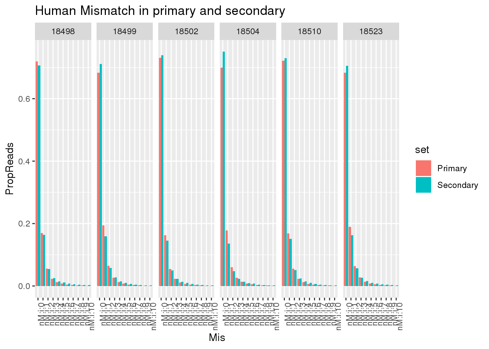
| Version | Author | Date |
|---|---|---|
| 842759e | brimittleman | 2020-03-31 |
ggplot(allHumanmismatch, aes(x=Mis,y=Reads,by=set, fill=set)) + geom_bar(stat="identity",position = "dodge") + facet_grid(~line)+ theme(axis.text.x = element_text(angle = 90, hjust = 1)) +labs(title="Human Mismatch in primary and secondary")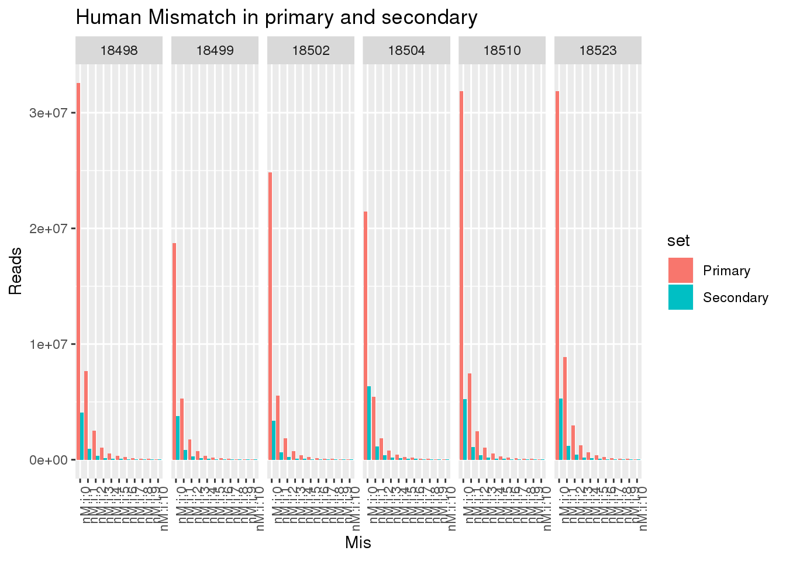
| Version | Author | Date |
|---|---|---|
| 842759e | brimittleman | 2020-03-31 |
This shows there is not an easy way to seperate the reads. Primary and secondary reads have mistmatches.
Mismatch score for unique reads.
Seperate the reads map uniq.
sbatch Filter255MM.shLook at the results:
Chimp_18358_Unique=read.table("../data/TestMM2_mismatch/chimp_combined_18358_N_255mismatch.txt", stringsAsFactors = F, col.names = c("Reads", "Mis")) %>% mutate(set="Unique", species="Chimp", line="18358")
Chimp_3622_Unique=read.table("../data/TestMM2_mismatch/chimp_combined_3622_N_255mismatch.txt", stringsAsFactors = F, col.names = c("Reads", "Mis")) %>% mutate(set="Unique", species="Chimp", line="3622")
Chimp_3659_Unique=read.table("../data/TestMM2_mismatch/chimp_combined_3659_N_255mismatch.txt", stringsAsFactors = F, col.names = c("Reads", "Mis")) %>% mutate(set="Unique", species="Chimp", line="3659")
Chimp_4973_Unique=read.table("../data/TestMM2_mismatch/chimp_combined_4973_N_255mismatch.txt", stringsAsFactors = F, col.names = c("Reads", "Mis")) %>% mutate(set="Unique", species="Chimp",line="4973")
Chimp_pt30_Unique=read.table("../data/TestMM2_mismatch/chimp_combined_pt30_N_255mismatch.txt", stringsAsFactors = F, col.names = c("Reads", "Mis")) %>% mutate(set="Unique", species="Chimp", line="pt30")
Chimp_pt91_Unique=read.table("../data/TestMM2_mismatch/chimp_combined_pt91_N_255mismatch.txt", stringsAsFactors = F, col.names = c("Reads", "Mis")) %>% mutate(set="Unique", species="Chimp",line="pt91")Human_18498_Unique=read.table("../data/TestMM2_mismatch/human_combined_18498_N_255mismatch.txt", stringsAsFactors = F, col.names = c("Reads", "Mis")) %>% mutate(set="Unique", species="Human", line="18498")
Human_18499_Unique=read.table("../data/TestMM2_mismatch/human_combined_18499_N_255mismatch.txt", stringsAsFactors = F, col.names = c("Reads", "Mis")) %>% mutate(set="Unique", species="Human", line="18499")
Human_18502_Unique=read.table("../data/TestMM2_mismatch/human_combined_18502_N_255mismatch.txt", stringsAsFactors = F, col.names = c("Reads", "Mis")) %>% mutate(set="Unique", species="Human", line="18502")
Human_18504_Unique=read.table("../data/TestMM2_mismatch/human_combined_18504_N_255mismatch.txt", stringsAsFactors = F, col.names = c("Reads", "Mis")) %>% mutate(set="Unique", species="Human", line="18504")
Human_18510_Unique=read.table("../data/TestMM2_mismatch/human_combined_18510_N_255mismatch.txt", stringsAsFactors = F, col.names = c("Reads", "Mis")) %>% mutate(set="Unique", species="Human", line="18510")
Human_18523_Unique=read.table("../data/TestMM2_mismatch/human_combined_18523_N_255mismatch.txt", stringsAsFactors = F, col.names = c("Reads", "Mis")) %>% mutate(set="Unique", species="Human", line="18523")Look at these.
allUniqmismatch=Human_18498_Unique %>%
bind_rows(Human_18499_Unique) %>%
bind_rows(Human_18502_Unique) %>%
bind_rows(Human_18504_Unique) %>%
bind_rows(Human_18510_Unique) %>%
bind_rows(Human_18523_Unique) %>%
bind_rows(Chimp_18358_Unique) %>%
bind_rows(Chimp_3622_Unique) %>%
bind_rows(Chimp_3659_Unique) %>%
bind_rows(Chimp_4973_Unique) %>%
bind_rows(Chimp_pt30_Unique)%>%
bind_rows(Chimp_pt91_Unique)%>%
group_by(line, set) %>%
mutate(TotalReads=sum(Reads)) %>%
ungroup() %>%
mutate(PropReads=Reads/TotalReads)
allUniqmismatch$Mis=factor(allUniqmismatch$Mis, levels=c("nM:i:0", "nM:i:1" , "nM:i:2", "nM:i:3" , "nM:i:4", "nM:i:5" , "nM:i:6", "nM:i:7" , "nM:i:8" , "nM:i:9","nM:i:10"))ggplot(allUniqmismatch, aes(x=Mis,y=Reads,by=species, fill=species)) + geom_bar(stat="identity",position = "dodge") + facet_grid(~line)+ theme(axis.text.x = element_text(angle = 90, hjust = 1)) + labs(title="Unique Read mismatch")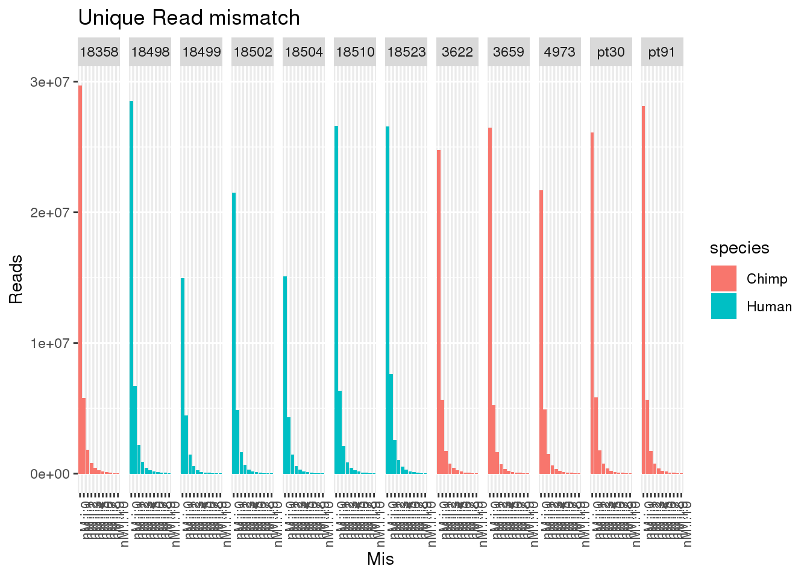
| Version | Author | Date |
|---|---|---|
| 842759e | brimittleman | 2020-03-31 |
ggplot(allUniqmismatch, aes(x=Mis,y=PropReads,by=species, fill=species)) + geom_bar(stat="identity",position = "dodge") + facet_grid(~line)+ theme(axis.text.x = element_text(angle = 90, hjust = 1)) + labs(title="Unique Read mismatch")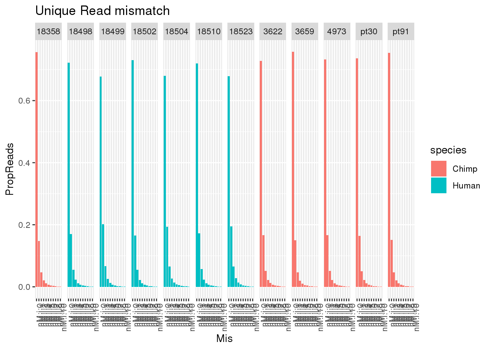
| Version | Author | Date |
|---|---|---|
| 842759e | brimittleman | 2020-03-31 |
So even uniq reads have mismatches.
##Alignment scores
“AS” SAM tag express the “Alignment score generated by aligner”, 14th column
Do this for the primary, secondary and unique mapping reads.
mkdir ../data/TestMM2_AS/
sbatch AlignmentScores.sh Chimp:
Chimp_18358_ASprimary=read.table("../data/TestMM2_AS/chimp_combined_18358_N_Primary.txt", stringsAsFactors = F, col.names = c("Reads", "AS")) %>% mutate(set="Primary", species="Chimp", line="18358")
Chimp_18358_ASsecondary=read.table("../data/TestMM2_AS/chimp_combined_18358_N_Secondary.txt", stringsAsFactors = F, col.names = c("Reads", "AS")) %>% mutate(set="Secondary", species="Chimp", line="18358")
Chimp_18358_ASuniq=read.table("../data/TestMM2_AS/chimp_combined_18358_N_255_AS.txt", stringsAsFactors = F, col.names = c("Reads", "AS")) %>% mutate(set="Unique", species="Chimp", line="18358")
Chimp_3622_ASprimary=read.table("../data/TestMM2_AS/chimp_combined_3622_N_Primary.txt", stringsAsFactors = F, col.names = c("Reads", "AS")) %>% mutate(set="Primary", species="Chimp", line="3622")
Chimp_3622_ASsecondary=read.table("../data/TestMM2_AS/chimp_combined_3622_N_Secondary.txt", stringsAsFactors = F, col.names = c("Reads", "AS")) %>% mutate(set="Secondary", species="Chimp", line="3622")
Chimp_3622_ASuniq=read.table("../data/TestMM2_AS/chimp_combined_3622_N_255_AS.txt", stringsAsFactors = F, col.names = c("Reads", "AS")) %>% mutate(set="Unique", species="Chimp", line="3622")
Chimp_3659_ASprimary=read.table("../data/TestMM2_AS/chimp_combined_3659_N_Primary.txt", stringsAsFactors = F, col.names = c("Reads", "AS")) %>% mutate(set="Primary", species="Chimp", line="3659")
Chimp_3659_ASsecondary=read.table("../data/TestMM2_AS/chimp_combined_3659_N_Secondary.txt", stringsAsFactors = F, col.names = c("Reads", "AS")) %>% mutate(set="Secondary", species="Chimp", line="3659")
Chimp_3659_ASuniq=read.table("../data/TestMM2_AS/chimp_combined_3659_N_255_AS.txt", stringsAsFactors = F, col.names = c("Reads", "AS")) %>% mutate(set="Unique", species="Chimp", line="3659")
Chimp_4973_ASprimary=read.table("../data/TestMM2_AS/chimp_combined_4973_N_Primary.txt", stringsAsFactors = F, col.names = c("Reads", "AS")) %>% mutate(set="Primary", species="Chimp",line="4973")
Chimp_4973_ASsecondary=read.table("../data/TestMM2_AS/chimp_combined_4973_N_Secondary.txt", stringsAsFactors = F, col.names = c("Reads", "AS")) %>% mutate(set="Secondary", species="Chimp",line="4973")
Chimp_4973_ASuniq=read.table("../data/TestMM2_AS/chimp_combined_4973_N_255_AS.txt", stringsAsFactors = F, col.names = c("Reads", "AS")) %>% mutate(set="Unique", species="Chimp", line="4973")
Chimp_pt30_ASprimary=read.table("../data/TestMM2_AS/chimp_combined_pt30_N_Primary.txt", stringsAsFactors = F, col.names = c("Reads", "AS")) %>% mutate(set="Primary", species="Chimp", line="pt30")
Chimp_pt30_ASsecondary=read.table("../data/TestMM2_AS/chimp_combined_pt30_N_Secondary.txt", stringsAsFactors = F, col.names = c("Reads", "AS")) %>% mutate(set="Secondary", species="Chimp",line="pt30")
Chimp_pt30_ASuniq=read.table("../data/TestMM2_AS/chimp_combined_pt30_N_255_AS.txt", stringsAsFactors = F, col.names = c("Reads", "AS")) %>% mutate(set="Unique", species="Chimp", line="pt30")
Chimp_pt91_ASprimary=read.table("../data/TestMM2_AS/chimp_combined_pt91_N_Primary.txt", stringsAsFactors = F, col.names = c("Reads", "AS")) %>% mutate(set="Primary", species="Chimp",line="pt91")
Chimp_pt91_ASsecondary=read.table("../data/TestMM2_AS/chimp_combined_pt91_N_Secondary.txt", stringsAsFactors = F, col.names = c("Reads", "AS")) %>% mutate(set="Secondary", species="Chimp", line="pt91")
Chimp_pt91_ASuniq=read.table("../data/TestMM2_AS/chimp_combined_pt91_N_255_AS.txt", stringsAsFactors = F, col.names = c("Reads", "AS")) %>% mutate(set="Unique", species="Chimp", line="pt91")ChimpAS=Chimp_18358_ASprimary %>%
bind_rows(Chimp_18358_ASsecondary) %>%
bind_rows(Chimp_18358_ASuniq) %>%
bind_rows(Chimp_3622_ASprimary) %>%
bind_rows(Chimp_3622_ASsecondary) %>%
bind_rows(Chimp_3622_ASuniq) %>%
bind_rows(Chimp_3659_ASprimary) %>%
bind_rows(Chimp_3659_ASsecondary) %>%
bind_rows(Chimp_3659_ASuniq) %>%
bind_rows(Chimp_4973_ASprimary) %>%
bind_rows(Chimp_4973_ASsecondary) %>%
bind_rows(Chimp_4973_ASuniq) %>%
bind_rows(Chimp_pt30_ASprimary) %>%
bind_rows(Chimp_pt30_ASsecondary) %>%
bind_rows(Chimp_pt30_ASuniq) %>%
bind_rows(Chimp_pt91_ASprimary) %>%
bind_rows(Chimp_pt91_ASsecondary) %>%
bind_rows(Chimp_pt91_ASuniq) %>%
group_by(line, set) %>%
mutate(TotalReads=sum(Reads)) %>%
ungroup() %>%
mutate(PropReads=Reads/TotalReads)ggplot(ChimpAS, aes(x=AS,y=PropReads,by=set, fill=set)) + geom_bar(stat="identity",position = "dodge") + facet_grid(~line)+ theme(axis.text.x = element_text(angle = 90, hjust = 1)) + labs(title="Alignment scores") Filter 1 individual to see better:
Filter 1 individual to see better:
ChimpAS18358= ChimpAS %>% filter(line=="18358")
ggplot(ChimpAS18358, aes(x=AS,y=PropReads,by=set, fill=set)) + geom_bar(stat="identity",position = "dodge")+ theme(axis.text.x = element_text(angle = 90, hjust = 1)) + scale_fill_brewer(palette = "Dark2") + labs(tite="Alignment scores for Chimp 18358",x="",y="proportion of reads")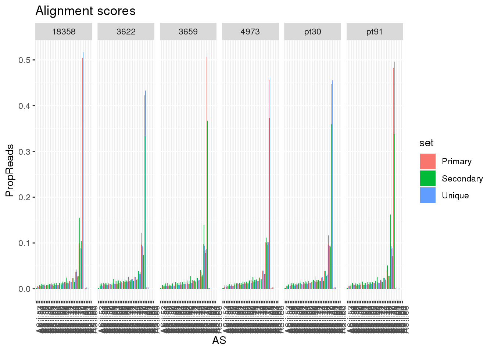
Try human:
Human_18498_ASprimary=read.table("../data/TestMM2_AS/human_combined_18498_N_Primary.txt", stringsAsFactors = F, col.names = c("Reads", "AS")) %>% mutate(set="Primary", species="Human", line="18498")
Human_18498_ASsecondary=read.table("../data/TestMM2_AS/human_combined_18498_N_Secondary.txt", stringsAsFactors = F, col.names = c("Reads", "AS")) %>% mutate(set="Secondary", species="Human", line="18498")
Human_18498_ASuniq=read.table("../data/TestMM2_AS/human_combined_18498_N_255_AS.txt", stringsAsFactors = F, col.names = c("Reads", "AS")) %>% mutate(set="Unique", species="Human", line="18498")
Human_18499_ASprimary=read.table("../data/TestMM2_AS/human_combined_18499_N_Primary.txt", stringsAsFactors = F, col.names = c("Reads", "AS")) %>% mutate(set="Primary", species="Human", line="18499")
Human_18499_ASsecondary=read.table("../data/TestMM2_AS/human_combined_18499_N_Secondary.txt", stringsAsFactors = F, col.names = c("Reads", "AS")) %>% mutate(set="Secondary", species="Human", line="18499")
Human_18499_ASuniq=read.table("../data/TestMM2_AS/human_combined_18499_N_255_AS.txt", stringsAsFactors = F, col.names = c("Reads", "AS")) %>% mutate(set="Unique", species="Human", line="18499")
Human_18502_ASprimary=read.table("../data/TestMM2_AS/human_combined_18502_N_Primary.txt", stringsAsFactors = F, col.names = c("Reads", "AS")) %>% mutate(set="Primary", species="Human", line="18502")
Human_18502_ASsecondary=read.table("../data/TestMM2_AS/human_combined_18502_N_Secondary.txt", stringsAsFactors = F, col.names = c("Reads", "AS")) %>% mutate(set="Secondary", species="Human", line="18502")
Human_18502_ASuniq=read.table("../data/TestMM2_AS/human_combined_18502_N_255_AS.txt", stringsAsFactors = F, col.names = c("Reads", "AS")) %>% mutate(set="Unique", species="Human", line="18502")
Human_18504_ASprimary=read.table("../data/TestMM2_AS/human_combined_18504_N_Primary.txt", stringsAsFactors = F, col.names = c("Reads", "AS")) %>% mutate(set="Primary", species="Human", line="18504")
Human_18504_ASsecondary=read.table("../data/TestMM2_AS/human_combined_18504_N_Secondary.txt", stringsAsFactors = F, col.names = c("Reads", "AS")) %>% mutate(set="Secondary", species="Human", line="18504")
Human_18504_ASuniq=read.table("../data/TestMM2_AS/human_combined_18504_N_255_AS.txt", stringsAsFactors = F, col.names = c("Reads", "AS")) %>% mutate(set="Unique", species="Human", line="18504")
Human_18510_ASprimary=read.table("../data/TestMM2_AS/human_combined_18510_N_Primary.txt", stringsAsFactors = F, col.names = c("Reads", "AS")) %>% mutate(set="Primary", species="Human", line="18510")
Human_18510_ASsecondary=read.table("../data/TestMM2_AS/human_combined_18510_N_Secondary.txt", stringsAsFactors = F, col.names = c("Reads", "AS")) %>% mutate(set="Secondary", species="Human", line="18510")
Human_18510_ASuniq=read.table("../data/TestMM2_AS/human_combined_18510_N_255_AS.txt", stringsAsFactors = F, col.names = c("Reads", "AS")) %>% mutate(set="Unique", species="Human", line="18510")
Human_18523_ASprimary=read.table("../data/TestMM2_AS/human_combined_18523_N_Primary.txt", stringsAsFactors = F, col.names = c("Reads", "AS")) %>% mutate(set="Primary", species="Human", line="18523")
Human_18523_ASsecondary=read.table("../data/TestMM2_AS/human_combined_18523_N_Secondary.txt", stringsAsFactors = F, col.names = c("Reads", "AS")) %>% mutate(set="Secondary", species="Human", line="18523")
Human_18523_ASuniq=read.table("../data/TestMM2_AS/human_combined_18523_N_255_AS.txt", stringsAsFactors = F, col.names = c("Reads", "AS")) %>% mutate(set="Unique", species="Human", line="18523")Human_AS=Human_18498_ASprimary %>%
bind_rows(Human_18498_ASsecondary) %>%
bind_rows(Human_18498_ASuniq) %>%
bind_rows( Human_18499_ASprimary) %>%
bind_rows(Human_18499_ASsecondary) %>%
bind_rows(Human_18499_ASuniq) %>%
bind_rows( Human_18502_ASprimary) %>%
bind_rows(Human_18502_ASsecondary) %>%
bind_rows(Human_18502_ASuniq) %>%
bind_rows( Human_18504_ASprimary) %>%
bind_rows(Human_18504_ASsecondary) %>%
bind_rows(Human_18504_ASuniq) %>%
bind_rows( Human_18510_ASprimary) %>%
bind_rows(Human_18510_ASsecondary) %>%
bind_rows(Human_18510_ASuniq) %>%
bind_rows( Human_18523_ASprimary) %>%
bind_rows(Human_18523_ASsecondary) %>%
bind_rows(Human_18523_ASuniq) %>%
group_by(line, set) %>%
mutate(TotalReads=sum(Reads)) %>%
ungroup() %>%
mutate(PropReads=Reads/TotalReads)ggplot(Human_AS, aes(x=AS,y=PropReads,by=set, fill=set)) + geom_bar(stat="identity",position = "dodge")+ theme(axis.text.x = element_text(angle = 90, hjust = 1)) + scale_fill_brewer(palette = "Dark2") + labs(tite="Alignment scores for Human Lines",x="",y="proportion of reads")+facet_grid(~line)
One line:
HumanAS18523= Human_AS %>% filter(line=="18523")
ggplot(HumanAS18523, aes(x=AS,y=PropReads,by=set, fill=set)) + geom_bar(stat="identity",position = "dodge")+ theme(axis.text.x = element_text(angle = 90, hjust = 1)) + scale_fill_brewer(palette = "Dark2") + labs(tite="Alignment scores for Human 18523",x="",y="proportion of reads")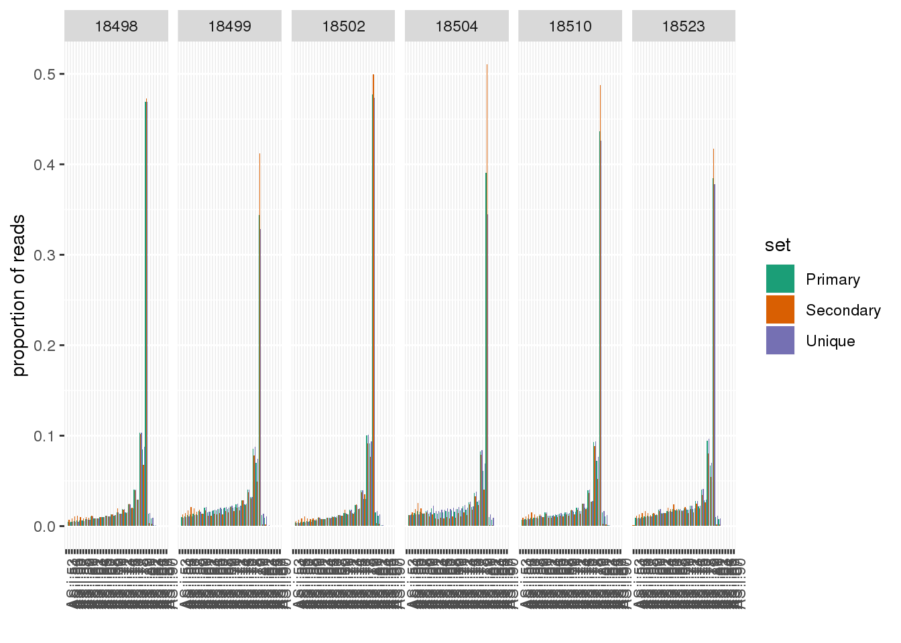 This does not differentiate good and bad reads either.
sessionInfo()R version 3.5.1 (2018-07-02)
Platform: x86_64-pc-linux-gnu (64-bit)
Running under: Scientific Linux 7.4 (Nitrogen)
Matrix products: default
BLAS/LAPACK: /software/openblas-0.2.19-el7-x86_64/lib/libopenblas_haswellp-r0.2.19.so
locale:
[1] LC_CTYPE=en_US.UTF-8 LC_NUMERIC=C
[3] LC_TIME=en_US.UTF-8 LC_COLLATE=en_US.UTF-8
[5] LC_MONETARY=en_US.UTF-8 LC_MESSAGES=en_US.UTF-8
[7] LC_PAPER=en_US.UTF-8 LC_NAME=C
[9] LC_ADDRESS=C LC_TELEPHONE=C
[11] LC_MEASUREMENT=en_US.UTF-8 LC_IDENTIFICATION=C
attached base packages:
[1] stats graphics grDevices utils datasets methods base
other attached packages:
[1] forcats_0.3.0 stringr_1.3.1 dplyr_0.8.0.1 purrr_0.3.2
[5] readr_1.3.1 tidyr_0.8.3 tibble_2.1.1 ggplot2_3.1.1
[9] tidyverse_1.2.1 workflowr_1.6.0
loaded via a namespace (and not attached):
[1] tidyselect_0.2.5 reshape2_1.4.3 haven_1.1.2
[4] lattice_0.20-38 colorspace_1.3-2 generics_0.0.2
[7] htmltools_0.3.6 yaml_2.2.0 rlang_0.4.0
[10] later_0.7.5 pillar_1.3.1 glue_1.3.0
[13] withr_2.1.2 RColorBrewer_1.1-2 modelr_0.1.2
[16] readxl_1.1.0 plyr_1.8.4 munsell_0.5.0
[19] gtable_0.2.0 cellranger_1.1.0 rvest_0.3.2
[22] evaluate_0.12 labeling_0.3 knitr_1.20
[25] httpuv_1.4.5 broom_0.5.1 Rcpp_1.0.2
[28] promises_1.0.1 scales_1.0.0 backports_1.1.2
[31] jsonlite_1.6 fs_1.3.1 hms_0.4.2
[34] digest_0.6.18 stringi_1.2.4 grid_3.5.1
[37] rprojroot_1.3-2 cli_1.1.0 tools_3.5.1
[40] magrittr_1.5 lazyeval_0.2.1 crayon_1.3.4
[43] whisker_0.3-2 pkgconfig_2.0.2 xml2_1.2.0
[46] lubridate_1.7.4 assertthat_0.2.0 rmarkdown_1.10
[49] httr_1.3.1 rstudioapi_0.10 R6_2.3.0
[52] nlme_3.1-137 git2r_0.26.1 compiler_3.5.1